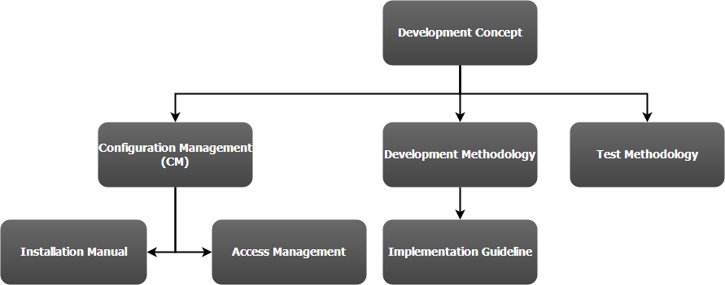
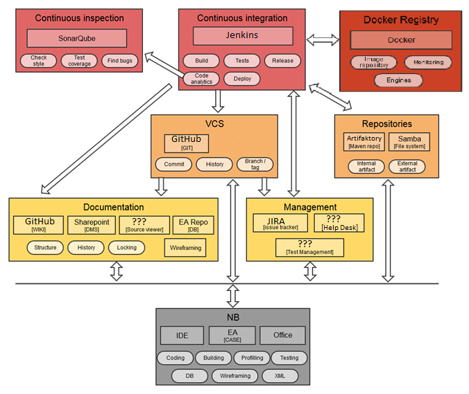
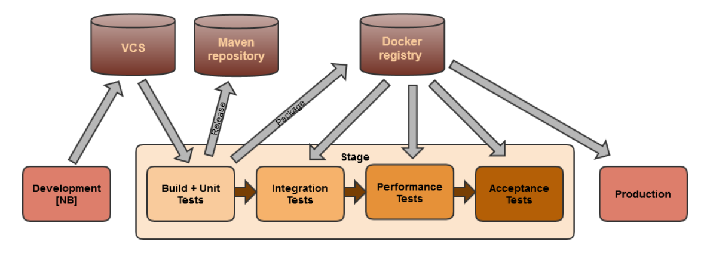
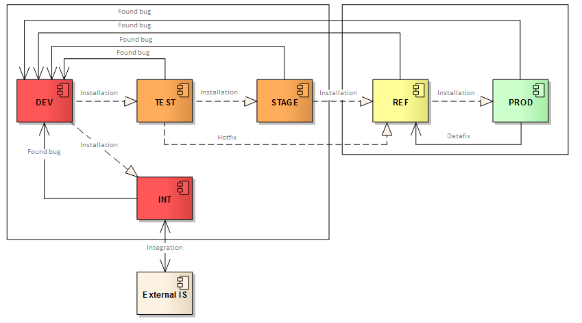
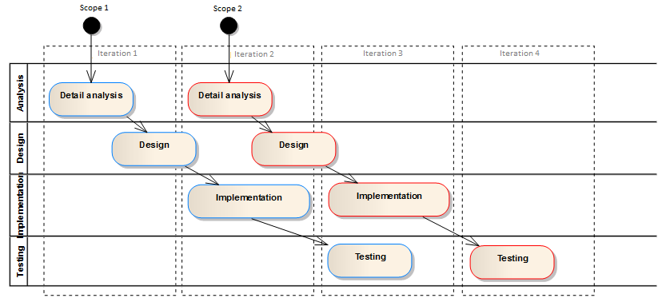
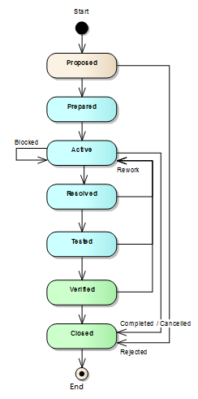
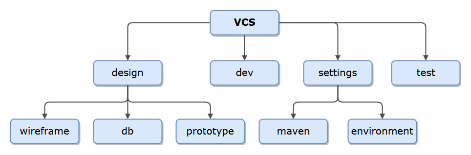
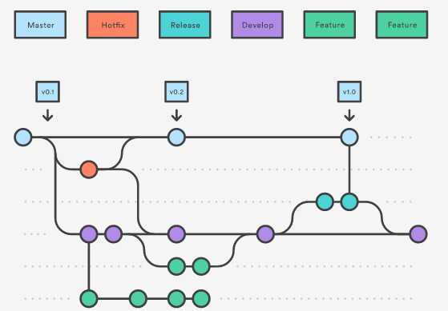

## Development Concept #### Tools & Approaches & Strategies Created by [Arnošt Havelka](http://cz.linkedin.com/in/arnosthavelka/)
## Agenda 1. Documentation 1. DevLine 1. Additional topics
## 1. Documentation 1. Overview 1. Development Concept 1. Development Methodology 1. Implementation Guideline 1. Configuration Management (CM) 1. Installation Manual 1. Access Management 1. Additional Documents
## 1.1 Overview The main purpose of **Development Concept** is to clarify all necessary details for development.
## 1.2 Development Concept [1/2] * the global overview / summary of the development concept declaring what is: * covered / included * skipped / excluded * referencing the relevant document for each defined area and what topics are covered there
1.2 Development Concept [2/2]

## 1.3 Development Methodology * development strategy (organization and used methodology) * requirements / approaches to be used * **analysis** - used diagrams, level of details/abstraction, defined outputs * **design** - similar to analysis * **development** - version strategy, development life cycle, design pattern, etc. * **test** - similar to development
## 1.4 Implementation Guideline * conversion matrix of data types * naming conventions * rules / requirements to be applied (logging, configuration, etc.) * source code syntax (formatting) * project specifics
## 1.5 Test Methodology * test definition * test strategy * outputs (e.g. reports)
## 1.6 Configuration Management (CM) * specification of the used HW & SW * CM items (documents, roles & competencies, mailing list groups, etc.) * referencing the relevant document for each defined topic * backup/recovery policy * monitoring policy
## 1.7 Installation Manual * list of environments (the usage, data, integration, owner, etc.) * installation guide (how to install the environment) * deployment guide (how to deploy our applications)
## 1.8 Access Management * defined roles (for authorization) * assigned roles to users (or groups)
## 1.9 Additional Documents * Specification documents (SAR, AIP, TSD etc.) * Organization chart & Catalog of roles * Monitoring * Release Management * Release Notes * Impact Analysis * Test report * Completion Certificate * etc.
## 2. DevLine 1. Overview 1. Documentation 1. Management 1. Repositories 1. Continuous Integration & Inspection 1. Docker
2.1 DevLine overview

## 2.2 Documentation 1. **DMS** - storage of relevant documents [Sharepoint] 1. **WIKI** - easy to access and edit information [Confluence, Sharepoint, JspWiki] 1. **UML** - shared repository for UML tool [DB for EA] 1. **Source code** - exposed for viewers [FishEye]
## 2.3 Management 1. **Issue Tracker** [JIRA, TFS, Bugzilla, Mantis] 1. **Help Desk** [OTRS, CA] 1. **Test Management** - definition and execution of TP/TS/TC [TestLink, SpiraTest, TFS]
## 2.4 Repositories 1. **VCS** - source code [GIT, SVN] * structure * branching strategies - stable vs. unstable * pull request vs. commit 1. **Repositories** 1. Maven - share libraries and artifacts [Artifactory, Nexus] 1. File - share any file, e.g. prepared distribution package [Samba]
## 2.5 Continuous Integration & Inspection 1. Continuous Integration [Jenkins, Bamboo, TeamCity, TFS] 1. Continuous Inspection [SonarQube]
2.6 Docker

## 3. Additional topics 1. Environments 1. Development Lifecycle 1. JIRA Workflow 1. VCS Structure 1. GitFlow
3.1 Environments

3.2 Development Lifecycle

3.3 JIRA Workflow

3.4 VCS Structure

3.5 GitFlow

See:
GitFlow workflow
or
Introduction to GitFlow
THE END
Thank you!